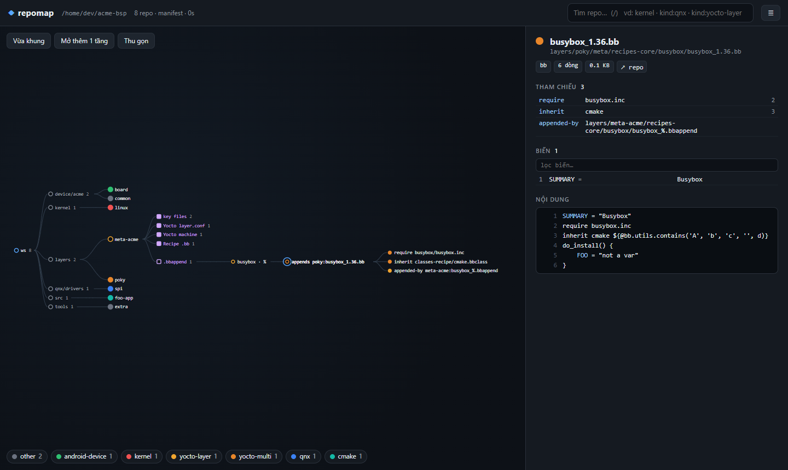

Đọc workspace repo sync như đọc một bản vẽ
repomap vẽ cây repo từ manifest, rồi chỉ đọc sâu vào chỗ bạn bấm: một repo, một nhóm file build, một file và những file nó kéo theo. Chạy ngay trên máy build vừa repo sync, không cần build, không cần mạng.
Bản vẽ trên là bản thu nhỏ của giao diện thật, dùng một workspace mẫu. Bấm vào các node có viền đỏ đứt nét để đi qua từng tầng.
Bốn tầng, chỉ nạp khi bạn cần
Một workspace Android hay Yocto có thể có vài nghìn repo. Quét hết mọi thứ lúc mở thì chậm và phần lớn thông tin bạn không dùng tới. repomap tách việc đọc thành bốn tầng; tầng sau chỉ chạy khi bạn bấm vào đúng chỗ đó, và kết quả được giữ lại cho lần bấm sau.
- 0Khi mở
Cây repo
Đọc
.repo/manifest.xmlcùng các file include,local_manifests, remove/extend-project. Mỗi repo được tô màu theo loại, nhận ra bằng vài file đánh dấu ở thư mục gốc. - 1Bấm một repo
Thông tin nhanh
Commit đang checkout, số file đang sửa, thông tin chính theo loại repo: layer Yocto, BoardConfig, phiên bản kernel, variant QNX. Kèm danh sách file chính.
- 2Bấm Deep scan
Toàn bộ file build
Liệt kê mọi file bằng
git ls-filesvà gom nhóm: recipe, bbappend, machine, Android module, defconfig, device tree, buildfile QNX, CMake, Makefile… - 3Bấm một file
File và tham chiếu
Biến, module, nội dung, và các file được kéo theo đã tìm ra đường dẫn thật. Bấm tiếp để đi sang file đó, kể cả khi nó nằm ở repo khác.

.inc và class nó kéo theo. Panel bên phải là chi tiết của node đang chọn.Chạy ở đâu
repomap phải chạy trên máy đang chứa source code, tức thư mục bạn đã repo sync về, vì nó đọc trực tiếp manifest, Makefile, file .bb… trên ổ đĩa.
Không cài lên board. Board chỉ chạy image đã build xong; trên đó không có source nên tool không có gì để đọc.
Trong các lệnh trên trang này, thay các tên mẫu bằng giá trị thật của bạn:
~/your_workspace_root: thư mục gốc bạn đã chạyrepo initvàrepo sync, bên trong có thư mục.repo/. Ví dụ~/projects/android13.your_build_server: tên hoặc địa chỉ IP của máy build bạn ssh vào.user: tài khoản ssh của bạn trên máy build.
Tuỳ source nằm ở đâu, chọn một trong hai cách.
Cách 1: source nằm trên PC Linux bạn đang ngồi
- Cài tool trên chính PC này, xem phần Cài đặt.
- Chạy rồi chọn
1. Run scan:repomap ~/your_workspace_root
Trình duyệt tự mở tại http://127.0.0.1:8800. Không cần ssh.
Cách 2: source nằm trên máy build ở xa, bạn ssh vào
- Cài tool trên máy build, xem phần Cài đặt.
- Trên máy build, chạy
repomap ~/your_workspace_root. Lần đầu, chọn2. Configurationđể nhập port và thông tin ssh (xem Cấu hình), sau đó chọn1. Run scan. Tool in ra một lệnh dạng:ssh -N -L 8800:127.0.0.1:8800 user@your_build_server
- Trên PC của bạn, chạy lệnh đó rồi giữ cửa sổ terminal mở. Với
-N, ssh chỉ giữ tunnel mà không mở shell, nên cửa sổ sẽ đứng yên; đó là bình thường. - Mở trình duyệt trên PC, vào
http://127.0.0.1:8800.
Tool đọc file ở máy build, còn bạn xem giao diện trên PC qua ssh tunnel. Không phải copy source về PC.
Port, user và tên máy trong lệnh tunnel chỉnh trong 2. Configuration. Nếu port 8800 bận, tool tự chuyển sang 8801, 8802… và lệnh in ra theo port mới.
Không ssh được
Nếu lệnh ssh báo Connection timed out dù vẫn ping được máy build, thì đường ssh từ PC tới máy đó đang bị chặn, không phải lỗi của repomap. Thử lần lượt:
- Dùng đúng lệnh bạn vẫn ssh vào máy đó hằng ngày: cùng tên máy đầy đủ, cùng port. Nhập lại các giá trị đó trong
2. Configuration. - Bật VPN hoặc dùng mạng có dây; nhiều nơi chỉ mở ssh từ mạng nội bộ.
- Nếu phải đi qua một máy trung gian, thêm
-J user@jump_hostvào lệnh tunnel. - Nếu bạn vào máy build bằng VS Code Remote-SSH, không cần lệnh tunnel: mở tab Ports trong VS Code và forward cổng 8800.
Nếu trình duyệt báo lỗi kiểu "Not found." is not valid JSON, cổng 8800 trên PC đang là một chương trình khác, thường vì tunnel chưa nối được.
Cài đặt
Tool được phát hành dưới dạng một gói repomap-1.0.0.tar.gz (hoặc bản .zip cùng nội dung). Máy cài chỉ cần python3 bản 3.8 trở lên; không cần pip, không cần mạng, không cần quyền root.
- Copy gói lên máy cần cài. Từ PC Windows 10 trở lên có sẵn lệnh
scp; dùng WinSCP cũng được.scp repomap-1.0.0.tar.gz user@your_build_server:~
- Trên máy đó, giải nén và cài:
tar xzf repomap-1.0.0.tar.gz cd repomap-1.0.0 sh install.sh
- Lệnh được cài vào
~/.local/bin/repomap. Nếu thư mục này chưa có trong PATH,install.shin ra dòng cần thêm vào~/.bashrc. - Chạy thử. Tool hiện menu; chọn
2. Configurationnếu cần đổi port hay thông tin ssh, rồi1. Run scan.repomap ~/your_workspace_root
| Không muốn cài | python3 repomap.pyz ~/your_workspace_root ngay trong thư mục giải nén. |
| Dùng Python khác | PYTHON=/duong/dan/python3 sh install.sh; lệnh repomap sẽ luôn chạy bằng Python đó. |
| Cài vào thư mục khác | sh install.sh --prefix /opt/tools, lệnh nằm ở /opt/tools/bin/repomap. |
| Gỡ cài đặt | sh install.sh --uninstall (thêm --prefix nếu lúc cài có dùng). |
Máy build không có Python 3.8
Kiểm tra trước bằng python3 --version; install.sh cũng tự kiểm tra và dừng lại nếu Python quá cũ. Máy build Yocto hay Android thường đã có sẵn python3. Nếu thiếu hoặc quá cũ, các cách dưới đều không cần quyền root, rồi cài bằng PYTHON=... sh install.sh:
- Android: sau
repo syncthường có Python dựng sẵn trongprebuilts/. Tìm bằngfind prebuilts -path '*linux-x86*' -name 'python3*' -type f. - Yocto: chạy
poky/scripts/install-buildtoolsđể tải bộ buildtools có python3 mới, sau đósourcefile môi trường mà nó in ra. - Python riêng trong thư mục home: giải nén một bản Python dựng sẵn cho Linux (dự án python-build-standalone, hoặc Miniforge) vào
~/opt/python, rồi dùng~/opt/python/bin/python3. - Chạy trên PC thay vì máy build: gắn source về PC bằng
sshfs your_build_server:your_workspace_root ~/your_workspace_rootrồi cài và chạy repomap trên PC. Nút Deep scan với repo lớn sẽ chậm hơn vì file phải đọc qua mạng.
Không cần giao diện
repomap ~/your_workspace_root --json kernel/linux > linux.json
In ra thông tin nhanh và kết quả quét sâu của một repo dưới dạng JSON, tiện để đưa vào script.
Tạo gói phát hành
Phần này dành cho người giữ mã nguồn. Người dùng chỉ nhận gói .tar.gz, không nhận repo: trong gói không có test, công cụ build hay lịch sử git.
- Cài Python 3.8 trở lên trên Windows từ python.org.
- Lấy mã nguồn:
git clone your_repo_url, trong đóyour_repo_urllà địa chỉ git của repo này. - Bấm đúp
release.bat, hoặc chạy trong cmd:Kết quả nằm trongrelease.bat rem chạy unit test rồi tạo gói release.bat notest rem bỏ qua unit test
dist\:repomap-1.0.0.tar.gzvàrepomap-1.0.0.zip. Cửa sổ dừng lại ở cuối để bạn đọc kết quả, kể cả khi có lỗi. - Gửi file
.tar.gzcho người dùng; họ làm theo phần Cài đặt.
Trong gói có repomap.pyz, install.sh, README.txt và trang hướng dẫn này dưới tên HUONG_DAN.html, đã bỏ phần Tạo gói phát hành.
repomap.pyz là file zip chứa mã Python của tool. Gói không kèm repo, nhưng ai giải nén file .pyz vẫn đọc được mã.
Chỉ cần file repomap.pyz
build.bat rem tạo dist\repomap.pyzTrên Linux
make release # gói .tar.gz và .zip make pyz # chỉ repomap.pyz python3 tools/make_release.py # không cần make
Windows và Linux cho ra cùng một gói, vì đều dùng tools/build_pyz.py và tools/make_release.py.
Cấu hình
Chạy repomap trong terminal sẽ hiện menu:
1. Run scan 2. Configuration 0. Exit Choose [1]:
Chọn 2. Configuration để nhập port của server và thông tin dùng cho lệnh ssh tunnel. Bấm Enter để giữ giá trị trong ngoặc vuông:
- Server port: cổng repomap mở trên máy build, mặc định 8800.
- SSH host: tên hoặc IP bạn dùng để ssh vào máy build từ PC. Mặc định là tên đầy đủ của máy.
- SSH user: tài khoản ssh của bạn, mặc định là user hiện tại.
- SSH port: tool tự đọc từ
/etc/ssh/sshd_config, không có thì dùng 22. Nếu khác 22, lệnh tunnel có thêm-p. - Local port on your PC: cổng trên PC của bạn, mặc định trùng với server port.
Cấu hình được lưu vào ~/.config/repomap/config.ini nên lần sau không phải nhập lại. Workspace quét lần trước cũng được nhớ, nên chọn 1. Run scan chỉ cần bấm Enter.
Tham số dòng lệnh luôn thắng file cấu hình: --port, --host, --no-browser, --workers. Dùng --run để bỏ qua menu, ví dụ trong script; khi không chạy trong terminal, tool cũng tự bỏ qua menu.
Có thể sửa file bằng tay; tạo file mẫu có chú thích bằng repomap --init-config. Thứ tự tìm file: --config, biến $REPOMAP_CONFIG, ./repomap.ini, rồi ~/.config/repomap/config.ini.
[server] host = 127.0.0.1 # 0.0.0.0 mở cho cả mạng, không có mật khẩu port = 8800 port_tries = 20 open_browser = auto # auto, yes hoặc no [ssh] # dùng để in lệnh tunnel host = your_build_server user = user port = # trống: đọc từ sshd_config, mặc định 22 local_port = # trống: giống port server [scan] workspace = /home/user/your_workspace_root workers = 0 # 0: tự chọn theo số CPU
Hệ được hỗ trợ
Mọi thứ là phân tích tĩnh trên file nguồn, nên dùng được ngay sau repo sync. Bảng dưới là những gì repomap nhận ra và đọc được ở từng tầng.
| Hệ | Nhận ra nhờ | Tầng 1 cho biết | Tầng 3 nối được |
|---|---|---|---|
| Yocto, BitBake | conf/layer.conf, meta-*/conf/layer.conf, bitbake/bin/bitbake |
Collection, priority, LAYERDEPENDS, LAYERSERIES_COMPAT, machine, distro, các thư mục recipes-*, phiên bản BitBake |
require, include, inherit sang class ở mọi layer; recipe với các bbappend của nó; SRC_URI sang repo trong manifest |
| Android | AndroidProducts.mk, BoardConfig*.mk, Android.bp, Android.mk |
PRODUCT_MAKEFILES, COMMON_LUNCH_CHOICES, TARGET_ARCH, TARGET_CPU_VARIANT, TARGET_BOARD_PLATFORM, module ở gốc repo | inherit-product sang file .mk ở repo khác; module trong Android.bp và Android.mk kèm thư viện phụ thuộc |
| QNX | Thư mục nto/, file .use, Makefile gọi recurse.mk hay qtargets.mk, buildfile có [virtual=] |
NAME, INSTALLDIR, LIBS, EXTRA_INCVPATH, các variant như nto/aarch64/so.le, thuộc tính image |
include từ Makefile của variant về common.mk |
| Linux, U-Boot | Kconfig cùng arch/, kernel/, mm/ (U-Boot: board/, cmd/) |
Phiên bản từ Makefile, danh sách arch và số defconfig của từng arch | #include trong device tree, source trong Kconfig |
| Python | pyproject.toml, setup.py, setup.cfg, requirements*.txt, Pipfile, tox.ini |
Tên, version, requires-python, build backend, lệnh console, danh sách thư viện phụ thuộc, package, framework test |
import và from … import (kể cả import tương đối, và import sang repo Python khác trong workspace); danh sách class, hàm, method |
| DevOps | Jenkinsfile, .gitlab-ci.yml, .github/workflows/, Dockerfile, compose, ansible.cfg, playbooks/, *.tf, Chart.yaml |
Stage và job của pipeline, image FROM và port, service của compose, host của playbook và role, provider/module/resource Terraform, thông tin Helm chart |
include của GitLab CI, import_tasks/include_tasks và role của Ansible, source module của Terraform, load trong Jenkinsfile |
| Các hệ khác | CMake, Meson, Make, Autotools, Bazel, Cargo, Go, Gradle, Node | Tên project và target CMake, các biến chính trong Makefile | add_subdirectory, include() của CMake, subdir() của Meson, include của Make; #include của C/C++ |
Thao tác trong giao diện
| Bấm một node | Chọn node, mở nhánh và nạp tầng tiếp theo nếu chưa có. Panel bên phải hiện chi tiết. |
| Bấm lại node đang chọn | Thu nhánh đó lại. |
| Kéo, cuộn chuột | Di chuyển và phóng to bản vẽ. |
| / | Tìm repo theo đường dẫn hoặc tên. Gõ kind:qnx để lọc theo loại; bấm vào chú thích màu ở góc dưới cũng ra kết quả tương tự. |
| Nút Deep scan (Quét sâu) | Trong panel của repo. Bấm lần nữa (Rescan) để quét lại sau khi bạn đổi file. |
| Số dòng trong panel | Nhảy tới dòng đó trong phần nội dung file. |
| Fit, Expand one level, Collapse | Căn bản vẽ vừa màn hình, mở rộng mọi thư mục đang thấy thêm một cấp, hoặc đóng hết về gốc. |
| Nút Open full source | Trong panel của repo (mở cả repo) hoặc của file (mở thư mục chứa file, tức thư mục của module như Android module hay QNX variant). Hiện cây thư mục bên trái, nội dung file có tô màu bên phải. Bấm vào tham chiếu (#include, import…) để mở file đó, kể cả khi nó ở repo khác. |
| Trong màn hình source | Ô Find file by name tìm theo tên file; ô Search in files (bấm Enter) tìm nội dung bằng git grep. Nút ← Back, phím Esc hoặc nút Back của trình duyệt đưa về đúng chỗ cũ trên cây. |
| Nút EN / VI | Cạnh ô tìm kiếm. Đổi giao diện giữa tiếng Anh (mặc định) và tiếng Việt; trình duyệt nhớ lựa chọn cho lần sau. |
Giới hạn cần biết
- repomap không chạy bitbake, make hay soong. Biến chỉ được thay ở các dạng đơn giản như
$(LOCAL_PATH),${THISDIR},${PN}; tham chiếu còn biến khác sẽ hiện nhưng không bấm sang được. - Override của BitBake và biểu thức
${@...}không được tính. - Thư viện phụ thuộc của Android module chỉ hiện tên, chưa nối sang repo định nghĩa module đó.
#includecủa C/C++ được nối theo kiểu đoán tốt nhất: cùng thư mục, thư mục cha,include/, rồi tìm file cùng tên trong repo. Khi chưa build thì không có include path thật, nên có lúc sẽ nối nhầm hoặc không nối được.#include <…>của thư viện hệ thống không nối.- YAML (CI, Ansible, compose) được đọc theo thụt lề, không dùng thư viện YAML; anchor, alias và cú pháp phức tạp có thể bị bỏ qua.
- Mỗi nhóm file gửi tối đa 600 mục về giao diện; nội dung file hiện 4000 dòng đầu.
- Workspace không có manifest vẫn dùng được: tool tìm các thư mục
.gitsâu tối đa 6 cấp.
Thêm một hệ build
Nhóm file nằm trong repomap/rules.py, file đánh dấu trong repomap/classify.py, parser trong repomap/parsers.py. Thêm màu cho loại mới ở repomap/web/js/util.js. Chạy make test để kiểm tra.